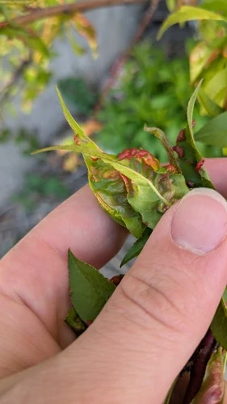

Leaf distortion
Misshapen leaves
This is one possible explanation. Compare the signs below with those on your plant.

What to look for
Note whether just one growing point is affected and inspect emerging leaves for pests.
Possible causes and next steps
Damage during expansion can distort a leaf. Look for pests, physical obstruction and recent spray exposure.
How to tell similar problems apart
Unfolding leaves can be distorted by feeding, cold injury or disease. Check whether the abnormality repeats on successive leaves and whether there are raised red blisters.
What to do now
Inspect folded margins for insects without forcing the leaves open. Note the host, time of bud break and any recent cold spell.
What to check next
Existing twisted leaves rarely straighten. If new shoots also distort, preserve a fresh sample with part of the shoot attached.